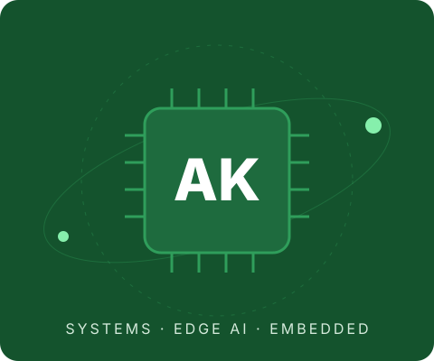

Computer Engineering · Georgia Tech
I build the systems that make AI run where the data lives.
I'm Akarsh, a Computer Engineering student at Georgia Tech (Class of 2028) and a founding engineer at Alphius. I work across the stack, from C firmware on satellite boards to distributed search in Rust to LLM serving research. Right now I'm most interested in edge AI: getting real models onto small, power-limited hardware.

At a glance
Research
Undergraduate researcher at the ANSR Lab (satellite resource virtualization) and the NEXS group (agentic LLM serving). Flight software at the Small Satellite Research Lab.
Startups
Founding engineer at Alphius, where I built Diligence.AI, a financial risk engine that earned a $2M-valuation term sheet. Co-builder of Legicycle and Crawfish.
Recognition
Zell Miller Scholar, Georgia Tech InVenture Prize Finalist, USACO Gold, President's Volunteer Service Award (Gold).